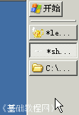
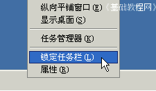

电脑操作基础
作者：TeliuTe 来源：基础教程网
三十九、拖动任务栏 返回目录 下一课有时候不小心会把任务栏拖到别的地方，或者太宽了等等，下面我们来看一个练习；
1、拖动任务栏
1）任务栏是桌面最下面的一个长条，左边是开始按钮，右边是系统托盘，打开的窗口都会在这里放一个按钮图标；
2）把鼠标移到任务栏的上边缘，指针会变成双箭头形状，这时候按住拖动鼠标就可以改变任务栏的宽度；
3）把鼠标移到任务栏中间空白处，按住鼠标任务栏就出现一个虚框，这时候拖动鼠标就可以移动任务栏的位置；
4）按顺序向着“右边－上边－左边－下边”，分别移动任务栏，注意看着虚线所在的位置；

5）拖动回来的时候也是按顺序，先拖到邻近的一个边，然后继续往下一个边拖动，不能跳着拖动；
6）如果不想让别人拖动任务栏，可以在任务栏空白处点右键，选择“锁定任务栏”命令，这样就不能拖动了；

本节学习了拖动任务栏的基本操作，如果你成功地完成了练习，请继续学习下一课内容；
本教程由86团学校TeliuTe制作|著作权所有，商业用途请与作者联系
基础教程网：http://teliute.org/
美丽的校园……
转载和引用本站内容，请保留版权信息和本站链接。